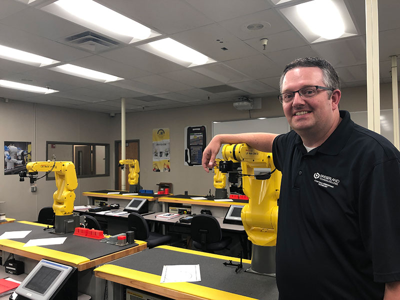

Prepare for a career at the cutting edge of learning design
Technology is changing the way people learn. In both the private and public sectors, we need learning designers more than ever. Our unique curriculum combines research and practice. ITLS students become leaders, known for their ability to adapt, grow and guide others.
97% of our students work in a related field within three months of graduation.
ITLS is ranked in the top five online programs in the nation by the 2018 U.S. News and World Report.
We love our working students! They bring depth to classroom discussions with real work experiences. We’ll help you figure out the details with your company and schedule.
On campus or online
Master’s students can study online to help accommodate full or part time jobs. Our online students benefit from our close-knit community, even while abroad.
Application Deadlines
The mandatory orientation experience for the ITLS department graduate programs is held each Fall on the USU Logan campus. All incoming graduate students are required to attend, both masters and doctoral level. There are two sections offered, but all incoming graduate students are required to attend only one of the sections.
Whitney: Instructional / Learning Designer at Intuit
Despite having a writing degree, Whitney feared she wouldn’t easily find a job outside of marketing. She wanted further training where she could also create a top-notch portfolio. Her interest in teaching, design, and creative problem solving made the ITLS track a logical choice.
Research
Brooke: Assessment Librarian at Oregon State University; PhD in ITLS
As a peace activist, Brooke knew she also needed to find a stable yet meaningful job. She wanted to use Instructional Technology tools to make the world a better place. At USU, she developed a deep love for statistics and data, which she now uses to further her own academic interests as well as graduate students and other members of the Oregon State University community.
Schools and Universities
Matt: Instructor at Bridgerland Technical College & AM STEM Coordinator
In charge of developing a hands-on STEM curriculum that's delivered daily to high school students across northern Utah, Matt wanted to be confident he was making the best research-backed decisions. He needed a deeper understanding of the learning process. But as a father of 4 with a full-time job, going to campus every day was out of the question. Matt completed the online ITLS program at USU, while applying his course projects to the curriculum development.

Museums, Libraries, and Community Sites
Stephanie: STEAM educator at Hands-On Museum (The Leonardo Museum, Salt Lake City)
Stephanie always wanted to be a teacher—just not in a traditional classroom. She didn’t know how else she could teach. She studied Instructional Design within the ITLS program while enjoying the freedom to tailor her electives. As a research assistant at the nature center, she discovered she loved Informal Education.